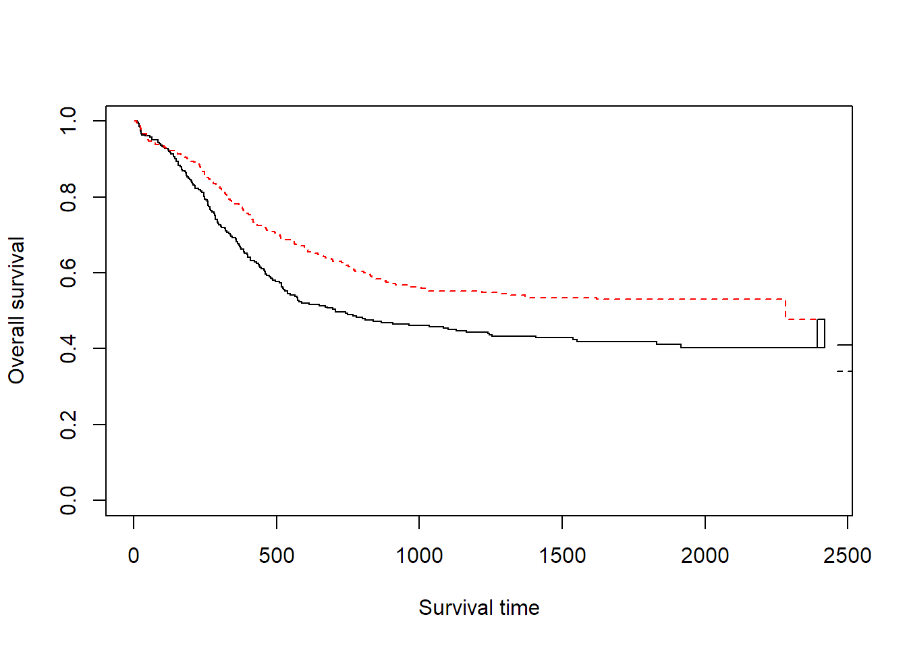
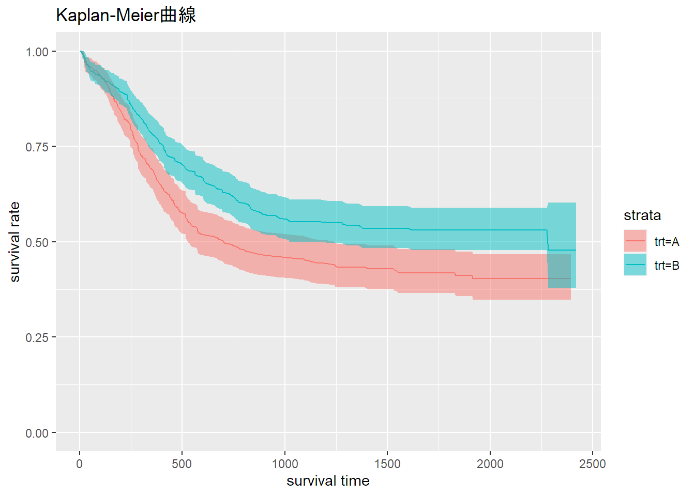
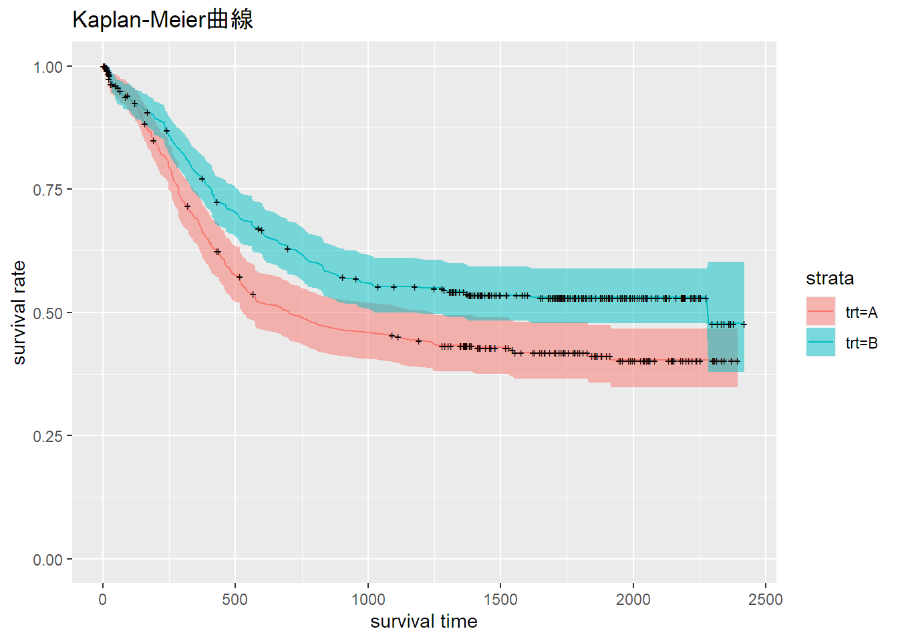

Rによる生存時間解析の実装
パッケージの読み込み
- まずパッケージを読み込む
# パッケージの読み込み
library(survival)
library(magrittr)データの確認
summary関数とstr関数を用いる。
必要に応じてグラフなどを書いてデータの分布を調べる。
head(myeloid, n = 5)## id trt sex futime death txtime crtime rltime
## 1 1 B f 235 1 NA 44 113
## 2 2 A m 286 1 200 NA NA
## 3 3 A f 1983 0 NA 38 NA
## 4 4 B f 2137 0 245 25 NA
## 5 5 B f 326 1 112 56 200先頭5行の表示
summary(myeloid)## id trt sex futime death
## Min. : 1.0 Length:646 f:361 Min. : 4.0 Min. :0.0000
## 1st Qu.:162.2 Class :character m:285 1st Qu.: 286.5 1st Qu.:0.0000
## Median :323.5 Mode :character Median : 817.0 Median :0.0000
## Mean :323.5 Mean :1010.1 Mean :0.4954
## 3rd Qu.:484.8 3rd Qu.:1733.2 3rd Qu.:1.0000
## Max. :646.0 Max. :2419.0 Max. :1.0000
##
## txtime crtime rltime
## Min. : 24.0 Min. : 21.0 Min. : 26.0
## 1st Qu.: 105.0 1st Qu.: 32.0 1st Qu.: 181.5
## Median : 147.0 Median : 39.0 Median : 283.0
## Mean : 229.3 Mean : 50.1 Mean : 363.3
## 3rd Qu.: 244.2 3rd Qu.: 57.0 3rd Qu.: 470.0
## Max. :1526.0 Max. :554.0 Max. :1905.0
## NA's :282 NA's :192 NA's :420# データの型確認
str(myeloid)## 'data.frame': 646 obs. of 8 variables:
## $ id : int 1 2 3 4 5 6 7 8 9 10 ...
## $ trt : chr "B" "A" "A" "B" ...
## $ sex : Factor w/ 2 levels "f","m": 1 2 1 1 1 1 2 1 1 1 ...
## $ futime: num 235 286 1983 2137 326 ...
## $ death : num 1 1 0 0 1 0 1 1 0 0 ...
## $ txtime: num NA 200 NA 245 112 102 NA 205 NA 106 ...
## $ crtime: num 44 NA 38 25 56 NA NA 34 28 NA ...
## $ rltime: num 113 NA NA NA 200 NA NA 382 NA NA ...ここで使うデータは、パッケージに付属のデータ：白血病患者に対する治療のA/Bでの効果を調べるデータ
- id: subject identifier, 1-646,
- trt: treatment arm A or B,
- sex: f=female, m=male,
- futime: time to death or last follow-up,
- death: 1 if futime is a death, 0 for censoring,
- txtime: time to hematropetic stem cell transplant
- crtime: time to complete response, rltime: time to relapse of disease
今回は治療A/Bと死亡までの差をみる
欠損値が存在しているが、今回の解析には影響を与えない。
生存時間解析の準備
ge.surv <- Surv(myeloid$futime, myeloid$death)
head(ge.surv, n = 10)## [1] 235 286 1983+ 2137+ 326 2041+ 63 446 1695+ 1669++はイベント打ち切り、無印はイベントがなかったことを示す
#myeloid %>%
Surv(myeloid$futime, myeloid$death)## [1] 235 286 1983+ 2137+ 326 2041+ 63 446 1695+ 1669+ 66+ 1364+
## [13] 17+ 209 261 2380+ 431 372 838 2086+ 1480+ 188 963 318
## [25] 373 1657+ 213 1421+ 337 565 286 1823+ 17+ 201 321+ 529
## [37] 266 1305 1460+ 1832 1859+ 1864+ 1880+ 368 1391+ 762 332 376+
## [49] 1740+ 2241+ 582 284 823 2186+ 2198+ 1737+ 2315+ 2006+ 185 2367+
## [61] 1893+ 1734+ 2042+ 2162+ 1176+ 2148+ 2247+ 1991+ 180 1956+ 1976+ 13
## [73] 1913+ 110 116 245 2194+ 531 1782+ 548 46 2052+ 411 1034
## [85] 293 2250+ 235 267 2136+ 1465+ 439 295 286 1251+ 1360+ 1783+
## [97] 1866+ 892 1525+ 461 322 1323+ 651 241+ 2300+ 2192+ 191 18+
## [109] 1621 50 15+ 27 574 917 609 1774+ 206 297 77 52
## [121] 1429+ 278 1393+ 232 106 397 140 2038+ 1911+ 13 1990+ 424
## [133] 2063+ 1721+ 955+ 1731+ 1499+ 281 310 1999+ 408 1361+ 337 15+
## [145] 1530+ 234 1681+ 518 800 1806+ 1192+ 2304+ 1687+ 1785+ 1912+ 2335+
## [157] 31+ 485 432+ 1409 1464+ 18 462 408 1423+ 1431+ 248 1459+
## [169] 2148+ 2188+ 1725+ 218 1999+ 1254 1420+ 1521+ 1921+ 1648+ 1555+ 614
## [181] 50 86 588+ 874 33 156 563 231 1020 1390+ 572 1877+
## [193] 2122+ 322 511 288 368 480 2224+ 1708+ 561 1578+ 834 1583+
## [205] 7+ 513 1426+ 2040+ 1796+ 1627+ 360 1280+ 2371+ 1479+ 260 2219+
## [217] 20 269 381 163 1287+ 1092+ 154 771 1972+ 1658+ 2283 1827+
## [229] 4+ 2210+ 1379 516 1007 1757+ 2134+ 99 1369+ 121 2361+ 423
## [241] 322 1423+ 369 603 25 1809+ 131 602 692 1444+ 601+ 305
## [253] 518 2118+ 972 524 1881+ 74 2345+ 403 14+ 2053+ 2254+ 76
## [265] 22+ 2154+ 779 167 16+ 191 707 103 283 293 1442+ 1350+
## [277] 1710+ 19+ 1384+ 263 1947+ 230 248 216 1717+ 1718+ 707 303
## [289] 89 1545+ 1283 388 2023+ 1990+ 140 759 2145+ 168+ 1843+ 2188+
## [301] 1960+ 874 34 438 396 867 1885+ 148 1522+ 2233+ 1795+ 13
## [313] 1467+ 1682+ 2063+ 1302+ 56 1666+ 1708+ 1384+ 644 239 2095+ 2065+
## [325] 588 432 308 1779+ 197 2183+ 1368+ 193 2239+ 1479+ 1414+ 599
## [337] 1834+ 1290+ 1968+ 2123+ 385 698+ 2255+ 1319+ 1465+ 1552 1883+ 409
## [349] 144 157 1370+ 193+ 128 671 670 1960+ 1320+ 679 1815+ 2149+
## [361] 748 1901+ 2229+ 964 1379+ 146 179 6+ 1755+ 2043+ 258 460
## [373] 575 364 2344+ 1953+ 386 1164 374 1683+ 1704+ 86+ 262 187
## [385] 65 355 36+ 1727+ 1855+ 215 319 1861+ 21+ 497 1385+ 9
## [397] 418 2028+ 476 1744+ 1952+ 344 464 1742+ 355 2222+ 226 356
## [409] 1405+ 210 907 2276+ 104 565 727 385 20 333 578 1988+
## [421] 1349+ 2007+ 255 522 539 23 1714+ 2056+ 341 258 2237+ 1102
## [433] 1729+ 2318+ 9+ 411 59+ 805 2058+ 697 2048+ 2034+ 696 411
## [445] 2083+ 388 342 1544+ 44 326 2200+ 28 1360+ 658 621 307
## [457] 248 1652+ 1623+ 540 166 246 458 329 2017+ 1129 1720+ 1703+
## [469] 167 1584+ 9+ 1021 465 1308+ 1681+ 1846+ 1241 1602+ 1813+ 1742+
## [481] 1459+ 95 1559+ 24 465 1333+ 419 1924+ 85 1537 246 1774+
## [493] 1999+ 2233+ 1367+ 267 1085 2052+ 742 516+ 499 1907+ 400 1792+
## [505] 1698+ 774 833 2253+ 1383+ 1039+ 148 447 476 736 1485+ 567+
## [517] 27 1745+ 313 1739+ 2043+ 1760+ 45 145 1989+ 242 1099+ 506
## [529] 2044+ 1497+ 156 456 1695+ 2299+ 1281+ 1990+ 24 495 743 2419+
## [541] 1764+ 170 1331+ 112 295 359 32 27 1374+ 120+ 365 144
## [553] 168 1901+ 275 826 1704+ 432+ 1780+ 49+ 1313+ 24+ 2126+ 609
## [565] 203 1245 436+ 1825+ 1915 2150+ 1710+ 2125+ 1594+ 1414+ 1455+ 1799+
## [577] 1728+ 1688+ 1113+ 185 10+ 811 1480+ 515 122 2179+ 420 248
## [589] 24 906+ 486 273 1220 40 443 383 829 160+ 275 400
## [601] 768 1347+ 1374+ 375 1456+ 27 93+ 1943+ 2041+ 517 252 293
## [613] 1417+ 752 1322+ 2070+ 16 2191+ 334 1370 2369+ 1401+ 664 259
## [625] 2308+ 2335+ 120 2055+ 1730+ 1373+ 563 1480+ 884 1386+ 1845+ 1313+
## [637] 410 697 253 21 22+ 237 2394+ 17+ 181 25+Kaplan-Meier法
ノンパラメトリック法による生存時間を当てはめる関数 survfit
デフォルトはカプラン・マイヤー推定法
生存曲線を描く
plot(ge.model,lty=1:2,xlab = "Survival time", ylab = "Overall survival", col = 1:2) %>% legend(locator(1),c("A","B"), lty=c(1,2))
## 実際に描くときはlegendを併記するとグラフに追記できるうまくlegendが追加できない。ggplot2を使って記載する方法もある。
ggplotを用いてカプランマイヤー曲線を描く。
ggplotはdata.frame型を使わなければならないので、fortifyを定義してやる必要がある。
fortify.survfit <- function(survfit.data) {
data.frame(time = survfit.data$time,
n.risk = survfit.data$n.risk,
n.event = survfit.data$n.event,
n.censor = survfit.data$n.censor,
surv = survfit.data$surv,
std.err = survfit.data$std.err,
upper = survfit.data$upper,
lower = survfit.data$lower,
strata = rep(names(survfit.data$strata), survfit.data$strata))
}
head(ggplot2::fortify(ge.model))## time n.risk n.event n.censor surv std.err upper lower strata
## 1 6 317 0 1 1.0000000 0.000000000 1 1.0000000 trt=A
## 2 9 316 0 2 1.0000000 0.000000000 1 1.0000000 trt=A
## 3 13 314 1 0 0.9968153 0.003189797 1 0.9906028 trt=A
## 4 14 313 0 1 0.9968153 0.003189797 1 0.9906028 trt=A
## 5 15 312 0 1 0.9968153 0.003189797 1 0.9906028 trt=A
## 6 16 311 1 1 0.9936101 0.004532899 1 0.9848216 trt=Alibrary(ggplot2)
ge.model %>% ggplot() + geom_line(aes_string(x = 'time', y = 'surv', colour = 'strata')) +
geom_ribbon(aes_string(x = 'time', ymin = 'lower', ymax = 'upper', fill = 'strata'), alpha = 0.5) +
ylim(0,1) +
xlab("survival time") + ylab("survival rate") + ggtitle("Kaplan-Meier曲線")
#+ scale_y_continuous(labels = scales::percent)打ち切りも表したいときは、
ge.censor <- ggplot2::fortify(ge.model) ge.censor %>% ggplot() + geom_line(aes_string(x = 'time', y = 'surv', colour = 'strata')) +
geom_ribbon(aes_string(x = 'time', ymin = 'lower', ymax = 'upper', fill = 'strata'), alpha = 0.5) +
geom_point(data = ge.censor[ge.censor$n.censor > 0,],
aes_string(x = 'time', y = 'surv'), shape = '+', size = 2) +
ylim(0,1) +
xlab("survival time") + ylab("survival rate") + ggtitle("Kaplan-Meier曲線")
Kaplan-Meier曲線を見る限り、比例ハザード性は保たれているようである。
ログランク検定
AとBによる生存曲線を比較する。
survdiff(Surv(myeloid$futime, myeloid$death) ~ myeloid$trt)## Call:
## survdiff(formula = Surv(myeloid$futime, myeloid$death) ~ myeloid$trt)
##
## N Observed Expected (O-E)^2/E (O-E)^2/V
## myeloid$trt=A 317 171 143 5.28 9.59
## myeloid$trt=B 329 149 177 4.29 9.59
##
## Chisq= 9.6 on 1 degrees of freedom, p= 0.002帰無仮説は「両群の生存曲線に差がない」である。
今回の結果はp値=0.002であり生存曲線に差があるという結果になる。
ただし、ログランク検定では患者の背景因子などは調整されていない。
Cox比例ハザード
先に描いた生存曲線から比例ハザード性は保たれていると考えられる。
今回は性別くらいしか調整する変数はないが、それを加えて解析を行う。
model.cox <- coxph(Surv(futime, death) ~ trt + sex, data = myeloid)
summary(model.cox)## Call:
## coxph(formula = Surv(futime, death) ~ trt + sex, data = myeloid)
##
## n= 646, number of events= 320
##
## coef exp(coef) se(coef) z Pr(>|z|)
## trtB -0.3582 0.6989 0.1129 -3.174 0.00151 **
## sexm 0.1150 1.1219 0.1128 1.020 0.30782
## ---
## Signif. codes: 0 '***' 0.001 '**' 0.01 '*' 0.05 '.' 0.1 ' ' 1
##
## exp(coef) exp(-coef) lower .95 upper .95
## trtB 0.6989 1.4307 0.5602 0.872
## sexm 1.1219 0.8913 0.8994 1.399
##
## Concordance= 0.549 (se = 0.016 )
## Likelihood ratio test= 10.56 on 2 df, p=0.005
## Wald test = 10.53 on 2 df, p=0.005
## Score (logrank) test = 10.62 on 2 df, p=0.005性別による生存率に違いはない。
治療BについてはHR 0.699 (95%CI 0.560 - 0.872)という結果で、治療B群の方が死亡率を有意に低下させる。
【参考文献】
ggplotでカプランマイヤー曲線を描く際に、こちらのサイトを参考にさせていただいた。